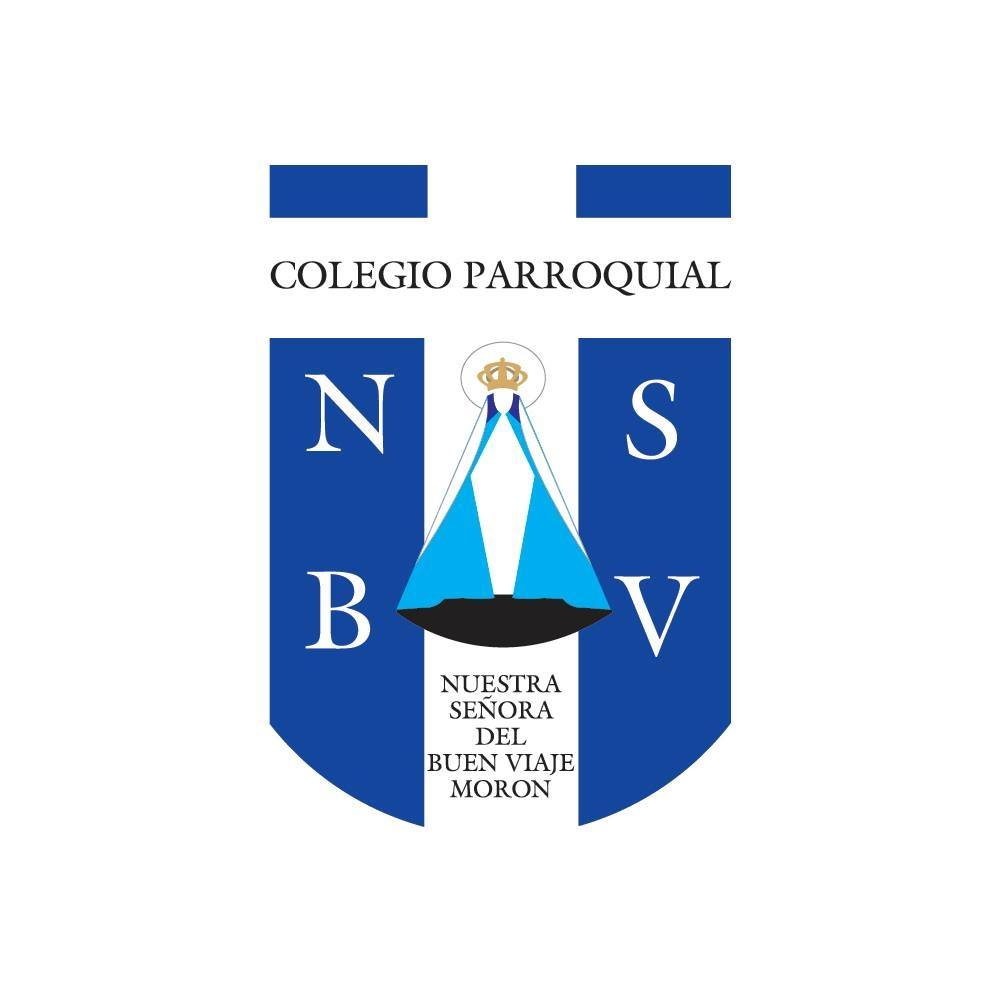
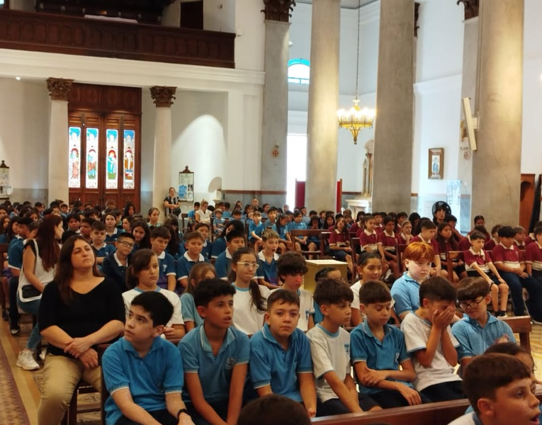

Colegio Parroquial Nuestra Señora del Buen Viaje
Titulo de Secundario: Bachiller en Economia y Administración
Competencias academicas adquiridas
Como bachiller en Economía y Administración adquirí competencias en el análisis e interpretación de información económica y financiera para la toma de decisiones, comprendiendo variables como costos, presupuestos y rentabilidad dentro de contextos organizacionales. También desarrollé habilidades en la gestión y organización administrativa, aplicando criterios de planificación, control y optimización de recursos tanto humanos como materiales. Además, consolidé capacidades en el manejo de documentación contable y comercial, y adquirí una base sólida en el pensamiento analítico y crítico para evaluar situaciones del entorno económico y proponer soluciones orientadas a la eficiencia y el crecimiento de las organizaciones.
Periodo
Fecha de Ingreso: Marzo 2014
Fin de Curso: Diciembre 2019
Imagenes del Colegio


